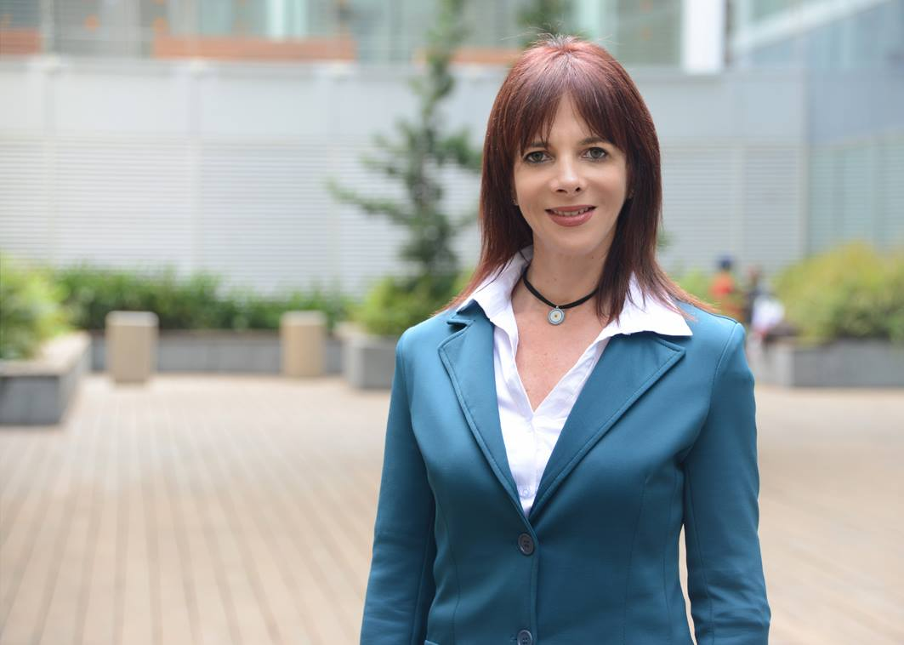

מי אנחנו?
היחידה לטיפול זוגי ומשפחתי במכון לבריאות הנפש שבמרכז הרפואי תל-אביב (איכילוב), מספקת מענה מקצועי ומעמיק לזוגות ולמשפחות המבקשים סיוע.
הגישה שלנו שמה את הזוגיות ואת המשפחה במוקד — אנו רואים את הזוגיות כיחידה שלמה ואת המשפחה כמערכת חיה. בגישה דינמית-התייחסותית, אנחנו צוללים אל תוך העומק של הקשר — מזהים את הדפוסים הנסתרים, את הרגשות שמתחבאים מתחת לפני השטח, את הצרכים שלא נאמרים. ומתוך ההבנה הזו, אנו מעניקים כלים מעשיים וקונקרטיים ליצירת שינוי אמיתי בחיי היומיום.
המרפאה הוקמה על-מנת לסייע לזוגות שמרגישים שהקשר שלהם נקלע למשבר, ולמשפחות המתמודדות עם קשיים בתפקוד ובתקשורת. במרפאה צוות מנוסה ומוסמך בטיפולים זוגיים ומשפחתיים, שמלווה את המטופלים ליצירת מסלול תקשורת משותף במרחב מוגן, ניטרלי ומאפשר.
היחידה מורכבת ממטפלים מוסמכים המתמחים בטיפול זוגי ומשפחתי בראייה מערכתית ודינמית-התייחסותית. אנשי הצוות עוברים הכשרות והשתלמויות מקצועיות מתמשכות, מציגים בכנסים מקצועיים, ומובילים ידע ופיתוח בתחום הטיפול הזוגי והמשפחתי בישראל. היחידה פועלת מתוך מחויבות למצוינות מקצועית ולעדכון מתמיד בגישות הטיפוליות המתקדמות ביותר.
תחומי הטיפול
טיפול זוגי — הזוגיות במוקד
הטיפול הזוגי שלנו שם את הקשר הזוגי כיחידה במרכז התהליך. בגישה דינמית-התייחסותית אנו חושפים את הרגשות העמוקים שמניעים את הדינמיקה בין בני הזוג, ומתוך ההבנה מעניקים כלים מעשיים לתקשורת, חיבור וקרבה מחודשת.למי מתאים? זוגות שחווים משבר בקשר, ריחוק רגשי, קשיי תקשורת, התלבטות לגבי עתיד הקשר, או התמודדות עם אירוע טראומטי. גם זוגות שרוצים לחזק ולהעמיק את הקשר.
טיפול משפחתי — ראייה מערכתית
הטיפול המשפחתי מתבסס על ראייה מערכתית — המשפחה כיחידה אחת שבה כל אחד מבני המשפחה משפיע ומושפע מהמערכת כולה. אנו מזהים דפוסים שאינם מיטיבים ומסייעים למשפחה לפתח דרכים חדשות ובריאות יותר להתייחס אחד לשני.למי מתאים? משפחות עם קונפליקטים חוזרים, התמודדות עם מחלה נפשית של בן משפחה, משברים משפחתיים (גירושין, אבל, שינויים), וקשיי תקשורת בין-דוריים.
תהליך ההפנייה והטיפול
הפנייה
פנייה טלפונית למזכירות המכון לבריאות הנפש ובקשה לקביעת ראיון קבלה ביחידה לטיפול זוגי או משפחתי. נדרש טופס 17 מקופת החולים או תשלום פרטי.
שימו לב: בשלב זה, השירות מיועד למטופלים המטופלים או שטופלו במכון לבריאות הנפש באופן פרטני, ולבני משפחותיהם או בני/בנות זוגם.
אינטייק מעבר למראה
פגישת הערכה ראשונית שנערכת מאחורי מראה חד-כיוונית (One-Way Mirror). צוות מומחים צופה ומנתח את הדינמיקה הזוגית או המשפחתית כדי להבין לעומק את הצרכים.
התאמה למטפל/ת
על בסיס ההערכה המעמיקה, מתבצעת התאמה מדויקת למטפל/ת מהצוות האיכותי שלנו — בעל/ת התמחות וניסיון רלוונטיים לסוגיה הספציפית שלכם.
ראש היחידה
-

נדין ג'קסון
עו"ס קלינית מדריכה | מטפלת זוגית ומשפחתית מוסמכת | ראש היחידה לטיפול זוגי ומשפחתי
"אני יושבת, ותפקידי לשאול: מה קורה לכם? למה אתם רבים ככה? אתם שניכם אומללים. ואז מגיעות התשובות האמיתיות — ואלו רק חלק מהתחושות שמבעבעות בקשר הזוגי ומחפשות פתח יציאה לבירור ולטיפול. וזה מה שאנו עושים כאן."
הצוות המקצועי
הצוות הטיפולי רב-מקצועי ומורכב מאנשי מקצוע מוסמכים בעלי ניסיון וותק בטיפול זוגי ומשפחתי. אנשי הצוות בעלי הסמכות מקצועיות, מעבירים הרצאות ומשתתפים בפעילות אקדמית ומקצועית.
- נדין ג'קסון – עו"ס קלינית מדריכה, מטפלת זוגית ומשפחתית מוסמכת, ראש היחידה
- נועה ארסט – עו"ס קלינית
- רויטל מורביץ – עו"ס קלינית
- נאוה נאי – עו"ס קלינית
- אלעד רפואה – פסיכולוג בהתמחות קלינית
- בר טנא – עו"ס
- אפרת שחר-צור – עו"ס קלינית
- יסמין [שם משפחה להשלמה] – פסיכולוגית, מטפלת זוגית
- עדי [שם משפחה להשלמה] – עו"ס קלינית
- [שמות נוספים של חברי צוות להשלמה — הרשימה חלקית]
הקשר שלכם שווה את המאמץ
התקשרו למזכירות המכון לבריאות הנפש ובקשו לזמן תור ליחידה לטיפול זוגי/משפחתי.